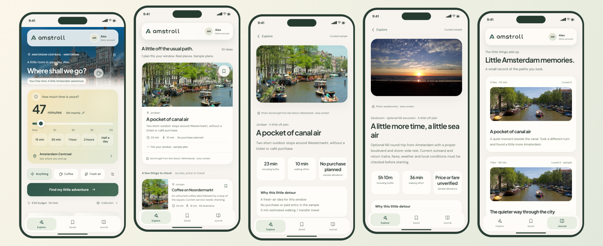

A vibe-coding experiment showing how a solid brief can leverage AI-assisted development to create solid wireframes, mockups and working prototypes.

📱 Less scrolling, more Amstrolling 🚶♂️
Proof that AI-assisted coding doesn’t guarantee good slogans. The rest of this article is handwritten. Promise. 😉
I’ve lived in Amsterdam for three years now, and I’m still finding places I’ve somehow walked past before. I live in the city centre, but I haven’t come close to running out of new corners to explore.
What feels right, right now? Well, it depends. Do I want to wind down? Do I feel like exploring? Or are we having espresso martinis? Some days I want a quiet walk beside the water; on others, I want to follow my curiosity and see where I end up. Amstroll grew out of that very ordinary question: what would make this moment a little better?
This is my first portfolio project experimenting with vibe coding. I used natural-language instructions to turn a product brief into an interactive prototype in just under two hours. For me, the value of this experiment is in ideation: making an idea tangible early enough to question it, explore alternatives and learn what people need.
In a business context, that means putting a prototype in front of stakeholders while the brief is still taking shape. A screen or working flow gives people something concrete to respond to, helping a team uncover assumptions, clarify needs and agree on the design direction. Thorough development can then build on a shared, agreed design brief. I’m using vibe coding here to support that conversation and alignment, rather than treating a quickly generated prototype as a finished product.
The interactive prototype
Choose an Amsterdam starting area and explore Open places: nearby suggestions with their own source photographs, five at a time. Adjust the time slider, exact editor and preferences, then try “More of these” for another selection. To explore a complete sample outing, switch to Amsterdam collection, open a fitting plan and progress manually or skip a stop. Finish with an optional journal memory. The fictional Alex account opens directly. No backend or API key is needed; Open places needs an internet connection, while the authored collection works offline.
If the embed cannot load, open the standalone prototype above or use the screenshots on this page. Manual area selection works without location permission. Storage restrictions may make saved ideas session-only.
The product concept
You’ve got an hour in Amsterdam. Let’s not spend forty-five minutes deciding what to do with it.
Amstroll turns that familiar “we should do something” into a small outing worth putting your shoes on for. A wander along the canals, a quiet park, a trip across the IJ: something that suits your mood and makes good use of the time you actually have.
Tell it where you’re starting, how much time you have and what you feel like doing. Then adjust how you want to travel, how far you fancy walking, your budget and where you need to finish. Your chosen time and budget stay exactly where you set them until you change them. The app respects a firm “I’ve only got an hour.”
There are always 20+ curated outing ideas to browse, with clear labels showing what fits, what needs a little longer and what still needs checking. Just looking for inspiration? Browse away. You can explore the options without committing to an outing. Sometimes “let’s see what’s around” is quite enough commitment for one afternoon.
And when a little stroll starts looking more like a day out, Haarlem and Zandvoort are on the menu too. Those excursions account for getting there, spending time there and getting back to Amsterdam. Even spontaneity needs a return journey. Apparently.
Framing the decision. I defined the essential inputs and separated an inspiring idea from a plan someone can confidently start.
Mapping the journey. Set time → choose an Amsterdam starting point → explore → inspect → start → progress or skip → keep a memory. I considered short windows, longer outings, missing information, denied location access and unavailable services.
Establishing the direction. Rounded cards, soft gradients, restrained shadows, readable type and generous space make the invitation feel comfortable. Amsterdam photography establishes place.
Prototyping behaviour. I used vibe coding to explore time controls, suggestion states and the outing-to-journal flow in HTML. Having something interactive made it easier to question the idea and try alternatives while the design brief was still open.
Refining through inspection. I checked narrow layouts, larger text, keyboard access, contrast, focus, reduced motion and failure states. These are design and implementation checks, not a formal user study.
I built the prototype with HTML, CSS and JavaScript so I could explore the whole journey in a browser and share it directly. Here, AI-assisted coding helped turn design questions into interactions I could inspect and refine. Its value at this stage is a more concrete discussion about what to build, rather than a claim that the engineering work is complete. Separate modules handle the place catalogue, planning rules, provider requests, local state and interface.
The standalone export bundles the essential assets and authored catalogue for static hosting. localStorage keeps saved ideas and notes in the browser; optional journal photos use IndexedDB. The core experience needs no backend or API key.
Authored Amsterdam plans stay separate from optional OpenStreetMap, Wikipedia, Wikidata and Commons context, and weather from MET Norway. Attribution and visible errors preserve those boundaries. The municipal connection requests Amsterdam’s Tramhaltes en metrostations 2026 inventory, showing straight-line proximity, not departures or verified routes.
GVB and NS buttons open official planners; they are not authenticated timetable feeds. Google Places and Routes are optional, owner-configured connections. No key was supplied during this phase, so external live verification remains pending.
Leaving room to explore
The next step would be to use feedback on this prototype to refine and agree the design brief before committing to a fuller build. A future native implementation could use SwiftUI, Core Location, a transport-aware route model, deliberate permissions and protected server handling of private provider credentials. This is a direction, not completed native code or a shipped iOS app.